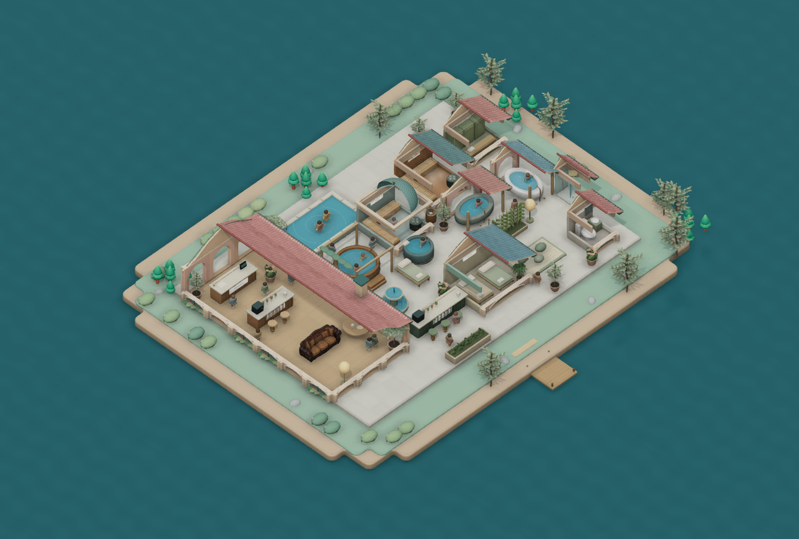

Stillwater
A quiet little world to build your own spa.
Play in your browser
Download the offline game · 13 MB
To play offline, extract the ZIP and open Stillwater.html in your browser. Everything is included.

Drag to orbit · Scroll to zoom · R rotates furnishings · C changes roofs · P opens photo view.
Download the example resort and import it through the game’s menu.